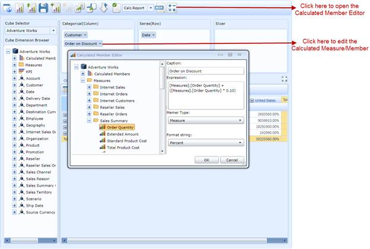

This feature allows the user to enable/disable, create, or edit the calculated members on the fly in the current OLAP report or current view of the OlapClient control. Using this feature, users can define measures and members they desire using the Calculated Member Editor (as shown in the following screenshot). The Calculated Member Editor dialog can be opened by clicking the button available in the toolbar of the OlapClient control.

Figure 42: OlapClient with Calculated Member Editor Dialog
Use Case Scenarios
This feature can be used to add one or more measures that will be derived from the existing measure collection.
For example, the user can define discount on a measure called Order Quantity (and its unique name is [Measures].[Order Quantity]) by expressing the calculated measure “[Measures].[Order Quantity] + (0.1 * [Measures].[Order Quantity])”.
Property
Table 11: Property Table
|
Property |
Description |
Type |
Data Type |
|
IsCalculatedMembersEnabled |
Gets or sets a value indicating whether calculated members are to be enabled |
Dependency |
Boolean |
Sample Link
Follow the steps given below to view the sample:
1. Open Syncfusion Dashboard
2. Navigate to Business Intelligence
3. Select Silverlight item
4. Click Run Samples
5. Select OlapClient
6. Select the Product Showcase feature list in left side tree
7. Select Calculated Members Demo
Adding Calculated Members UI option to an Application
The following code snippet explains how to enable or disable the Calculated Members UI option in an OlapClient application:
|
[C#] ////Enable the Calculated Members in current view of the OlapClient. this.olapClient1.IsCalculatedMembersEnabled = true; //if set false, then it will be disabled or all calculated members will be deleted from the current view of the OlapClient. |
|
[VB] 'Enable the Calculated Members in current view of the OlapClient. Me.olapClient1.IsCalculatedMembersEnabled = True ''''if set false, then it will be disabled or all calculated members will be deleted from the current view of the OlapClient. |
[XAML]<CheckBox Name="chk_CalcMember ToolTip="Enable/Disable Calculated Members" Content="Enable Calculated Members" IsChecked="{Binding ElementName=olapClient1, Path=IsCalculatedMembersEnabled, Mode=TwoWay}"/> |